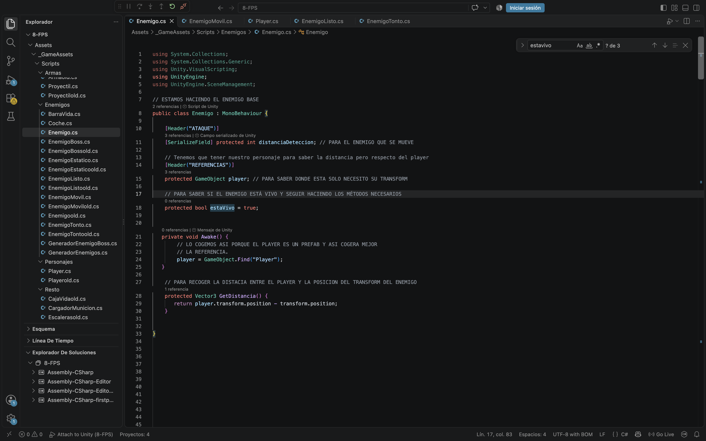
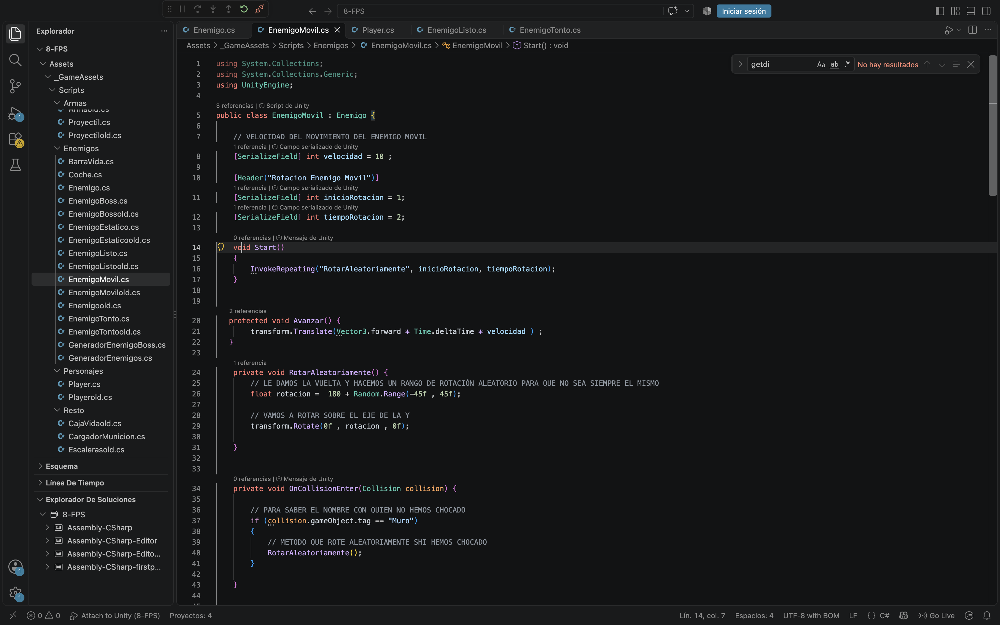
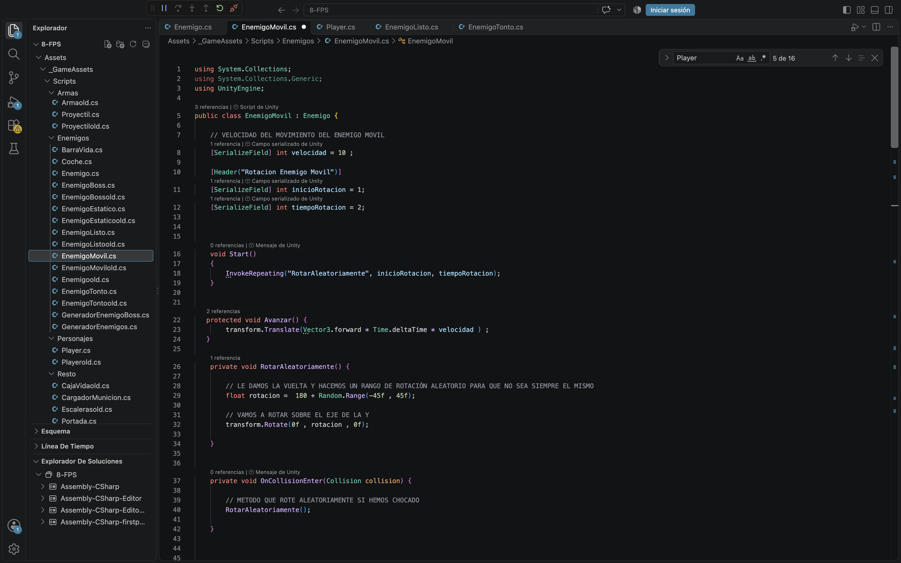
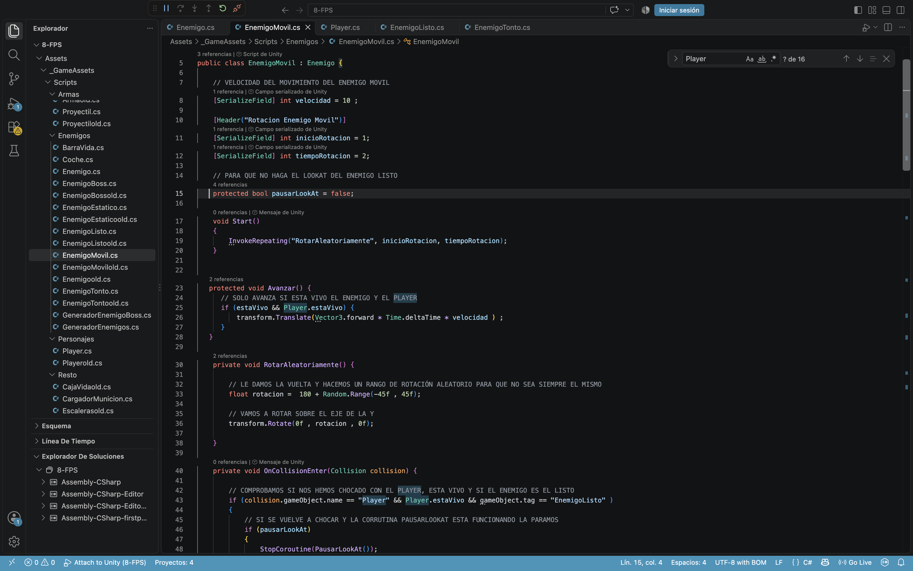
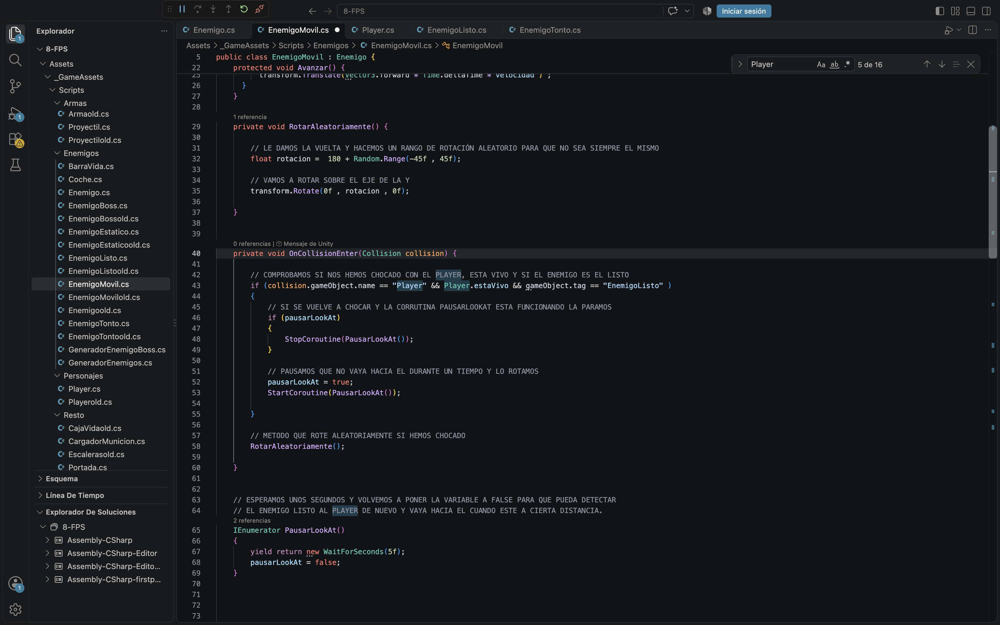
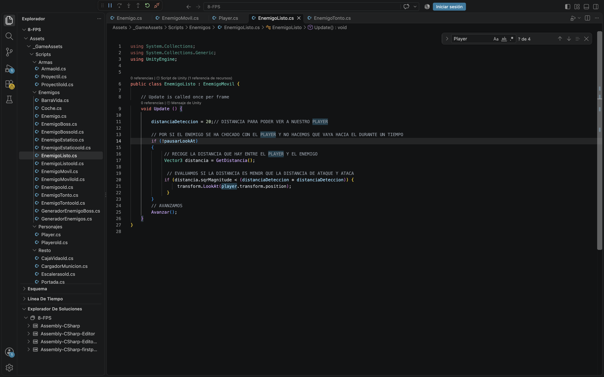

Tenemos que hacer algunos ajustes para los Enemigos Moviles (Tonto y Listo) en el Script de EnemigoMovil.cs:
- El Enemigo avanzará si sigue vivo él o el Player.
- Tendra que rotar aleatoriamente cada cierto tiempo pero si choca con cualquier collider también rotara.
- Pero si choca con el EnemigoListo tendrá que pausar el cálculo de la distancia para se despegue del Player y al cabo de unos segundos volveremos a activar esa distancia.
Faltaria hacer el Boss que también heredaria del EnemigoMovil. Pero lo haremos más adelante.
Crear un variable en el Script Enemigo.cs de estaVivo a true. Será protected para poder utilizarlo en el resto de los Scripts.

Vamos a crear 2 variables de tipo SerializeField inicioRotacion y tiempoRotacion:
- inicioRotacion será cuando tarda en empiezar el Método RotarAleatoriamente a ejecutarse.
- tiempoRotacion cada cuando tiempo se ejecuta.
Llamaremos al Método en el Start con un InvokeRepeating para que se ejecute continuamente por cada tiempoRotacion (2sg).
Todo tiene que estar parametrizado con variables. Siempre será más facil modificar el valor de una variable que repasar todo el script y buscar donde tengo que cambiarlo.

Cuando colisiona el Enemigo con cualquier cosa tiene que hacer el Método RotarAleatoriamente(). Asi que de momento quitamos el if de colisión con el Muro.

Cuando el Enemigo Listo choque con el Player tenemos que hacer que RoteAleatoriamente pero como está dentro de la distancia para ir a por el Player no se despegara. Asi que tendremos que modificar la colisión.
Script EnemigoMovil.cs.
- Crear una variable pausarLookAt sera protected bool y lo inicializamos a false.
- Y solo avanzara si está vivo el Player y el Enemigo.

Player.estaVivo es una variable publica static del Script Player.cs. Y se puede acceder desde cualquier Script sin hacer referencia.
- Método OnCollisionEnter preguntamos si la colision es el Player y si esta vivo y si nos hemos chocado con el tag EnemigoListo.
- Si vuelve a chocar el Enemigo y pausarLookAt esta a true es porque está funcionando la Corrutina, asi que hay que parar la Corrutina porque no tiene sentido que este esperando si le ha vuelto el Enemigo a dar al Player.
- Método PausarLookAt() Es una Corrutina y la pausaremos durante 5 segundos y volvemos a dejar la variable pausarLookAt a false para poder activar el LooAt().

En EnemigoListo.cs tenemos que preguntar por la variable pausarLookAt y si no se pausa dejara hacer el LookAt().
